Prototipos
JavaScript es un lenguaje con paradigma orientado a objetos, lo que implica que todo elemento generado es un objeto, desde los datos "string", "number", variables, todos los elementos en JavaScript son objetos realmente; a su vez se trata de un lenguaje basado en prototipos, esto quiere decir que a la hora de crear un nuevo objeto este no se crea completamente desde cero, en su lugar JavaScript utiliza como guía prototipos que se encuentran estructurados y definidos por defecto en el lenguaje.
Por lo tanto, JavaScript es un lenguaje basado en objetos los cuales a su vez se encuentran basados en prototipos.
Por ejemplo, al imprimir un objeto en consola como en el siguiente código, se pueden observar las propiedades que este posea, sin embargo también se puede observar la propiedad "__proto__ : object", el cual se trata del prototipo padre de todos los elementos en JavaScript, por lo tanto todos los elementos sin importar su tipo poseen la propiedad "__proto__ : object".
Ejemplo
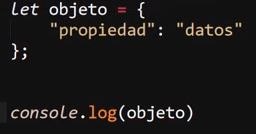
Resultado
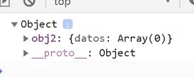
Por ejemplo, ya que este prototipo es poseído por todos los elementos JS, estos también pueden acceder a sus propiedades; al aplicar la propiedad "__proto__" en un elemento, este mostrará el tipo de prototipo del que se trata y dará acceso a todas las propiedades de este.
Ejemplo
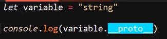
Resultado
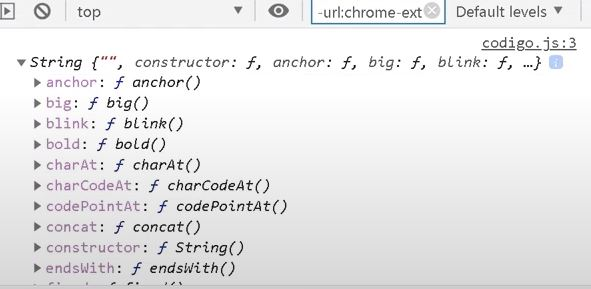
Nota: Así como también a una segunda propiedad __proto__ en la que se encuentra el prototipo padre como tal:
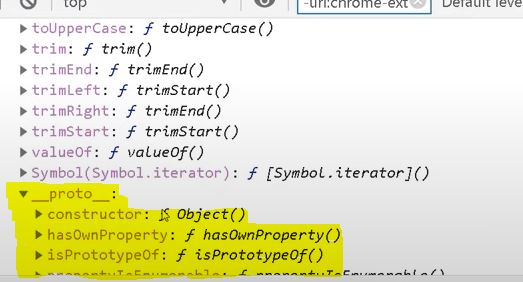
Se podría decir que todos los elementos heredan dos prototipos, el primero corresponde al tipo de dato, mientras que el segundo corresponde al prototipo "object".
Es aquí donde entra el concepto de cadena de prototipos "prototype chain", en el cual realmente los elementos únicamente heredan un prototipo que corresponde a su tipo, sin embargo este prototipo a su vez hereda un segundo prototipo en el que este está basado, y así sucesivamente hasta llegar al "prototipo object" el cual es el padre de todos los otros prototipos existentes.
Nota: los tipos de datos "undefined" y "null" no poseen el prototipo object, ya que se tratan de valores nulos y sin definir.
Crear un prototipo
Como ya se ha indicado la gran mayoría de los elementos poseen prototipos para su creación, salvo algunos datos vacíos que no los poseen, sin embargo también existen elementos que pueden crear un prototipo completamente nuevo, estas son las funciones, las cuales no poseen un prototipo definido, sino que en su lugar lo generan directamente desde el prototipo "object".
Debido a que se trata de un nuevo tipo de prototipo que se está generando la forma de acceder a este es diferente, no se utiliza la propiedad "__proto__", en su lugar se utiliza la propiedad ".prototype", de la siguiente forma:
Ejemplo
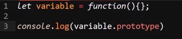
Resultado
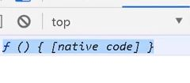
De este modo si se desea acceder al prototipo "object" de las funciones se realiza de la siguiente forma: "
Ejemplo
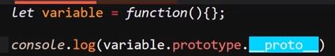
Resultado
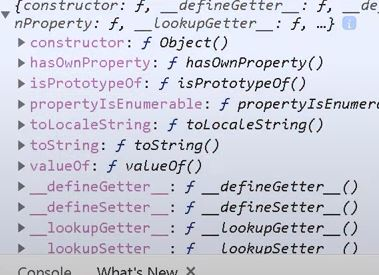
Características
-
Un prototipo creado a través de funciones se denomina como mutable.
-
Los prototipos en sí también son objetos, pueden poseer propiedades y funciones.
-
Tiene una incidencia física real en la memoria, es decir está incorporado a nivel de hardware en la memoria.
-
Puede ser llamado y modificado.
-
Puede ser visto como un modelo ejemplar descendiente del modelo "objeto".
-
Un objeto hereda propiedades (valores y métodos) de su prototipo.
Sobrescribir __proto__ vs Sobrescribir método
Los objetos también tienen prototipo, de hecho este prototipo se puede modificar en función de los métodos o funciones que se definan al objeto, por lo tanto también hace posible el controlar cómo se modifica el prototipo.
De hecho existe una diferencia entre modificar alguno de los métodos definidos para el objeto que ha sido creado y sobrescribir los prototipos sobre los que está basado el objeto.
Ejemplo
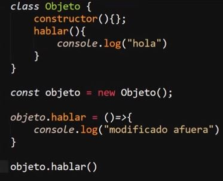
Por ejemplo, en este caso se genera una clase para crear un objeto llamado "Objeto", el cual tiene un método llamado "hablar"; luego de haber sido definida la clase se genera el objeto y luego se modifica el valor de la clase "hablar", realmente en este caso no se está modificando el valor del método hablar, sino que en su lugar se está añadiendo un segundo método al objeto igualmente llamado "hablar".
Esto ocurre ya que los métodos definidos dentro de la clase que genera el objeto se guardan dentro del prototipo, mientras que la segunda clase "hablar", la cual está siendo generada fuera de este, se guarda como un método del nuevo objeto recién creado.
Por otro lado, si lo que se desea es modificar el método original llamado "hablar", el cual se encuentra guardado dentro del prototipo, lo que se debe hacer es llamar al método directamente desde el prototipo y de ese modo aplicarle los cambios en cuestión como en el siguiente ejemplo.
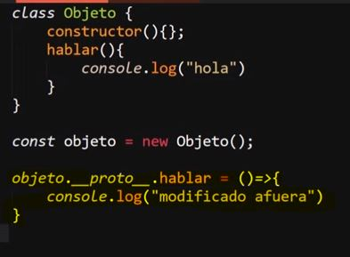
De este modo los cambios en vez de generar un nuevo método lo que hacen es sobrescribir el generado directamente desde el prototipo.
Heredar un método del prototipo
Es posible utilizar los prototipos para que un elemento herede un método que originalmente no debería poder usar, esto se logra accediendo al prototipo del método que se desea que reciba la herencia y se iguala al prototipo del método que se desea aplicar, tal y como se realiza en el siguiente ejemplo:
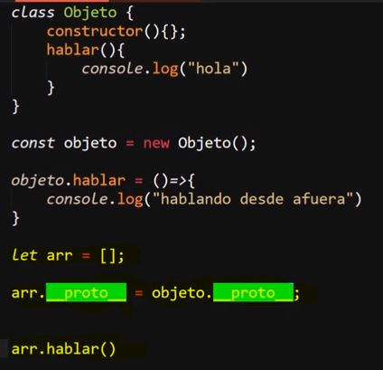
Ejemplo en el que se genera el objeto "Objeto", pero se desea que sus métodos puedan ser utilizados por el array "arr"; en este caso para lograr esto se accede tanto al prototipo del objeto como del array, se igualan ambos prototipos y de ese modo el array podrá hacer uso del método del objeto, esto ya que el prototipo del array está heredando el prototipo del objeto.
De ese modo se ignora el segundo método "hablar" que se ha generado fuera del prototipo, y en su lugar el array hereda el método "hablar" que se define dentro de la clase, por lo tanto está guardado dentro del prototipo, razón por la cual el resultado del código anterior es:
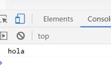
Nota: Si se da el caso de necesitar acceder al prototipo de un objeto se realizará desde el método "__proto__".